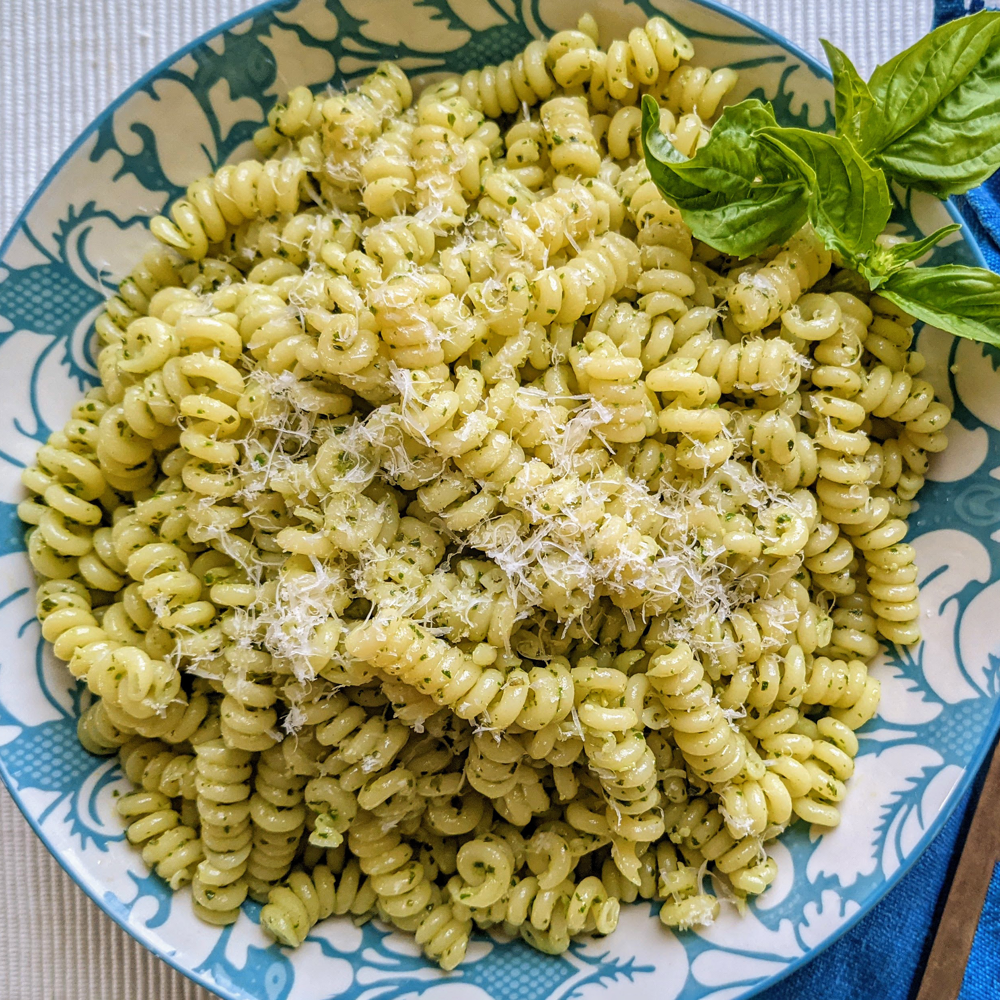

Home
Pesto Pasta

Description
Looking for a homemade alternative to pasta that's just as quick and easy?
This stovetop pesto pasta uses staple ingredients and comes together in
just 15 minutes. You'll want to bookmark this recipe for busy weeknights.
The good news is, it's so simple that once you make it a couple times,
you'll likely have it memorized.
Ingredients
- ½ cup chopped onion
- 2 ½ tablespoons pesto
- 2 tablespoons olive oil
- 2 tablespoons grated Parmesan cheese
- 1 (16 ounce) package pasta/li>
- Salt to tatse
- Ground black pepper to taste
Steps
- Cook pasta in a large pot of boiling water until done. Drain.
-
Meanwhile, heat the oil in a frying pan over medium low heat. Add pesto,
onion, and salt and pepper. Cook about five minutes, or until onions are
soft.
-
In a large bowl, mix pesto mixture into pasta. Stir in grated cheese.
Serve.
Head to top